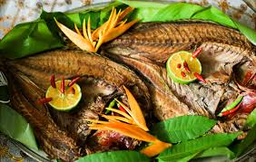

A Gastronomia de Palau
A gastronomia de Palau possui forte influência da cultura da Oceania e também de países asiáticos que tiveram contato histórico com a região. A culinária local é bastante ligada aos recursos naturais disponíveis nas ilhas, principalmente peixes, frutos do mar, frutas tropicais e vegetais. Muitos pratos tradicionais são preparados utilizando ingredientes frescos, pescados diretamente do oceano.
Os peixes possuem grande importância na alimentação da população. Diversas famílias vivem da pesca e utilizam o pescado como principal fonte de alimento. Os pratos normalmente incluem peixes grelhados, frutos do mar e arroz, que é um dos alimentos mais consumidos no país. O coco também é muito utilizado em receitas típicas, tanto em pratos salgados quanto em sobremesas e bebidas.
As frutas tropicais fazem parte do cotidiano alimentar de Palau. Banana, manga, mamão e coco são consumidos com frequência, principalmente devido ao clima tropical da região. Muitas bebidas naturais são preparadas com frutas frescas, incluindo sucos e água de coco.
A culinária de Palau também recebeu influência de outros países ao longo da sua história. A presença japonesa e norte-americana trouxe novos ingredientes e hábitos alimentares para a população. Atualmente, é possível encontrar restaurantes que misturam receitas tradicionais com pratos modernos.
Além da alimentação cotidiana, a comida possui grande importância cultural no país. Em festas, celebrações e eventos familiares, é comum o compartilhamento de refeições tradicionais. Muitas receitas são passadas de geração para geração, preservando costumes antigos da população local.
Os restaurantes turísticos de Palau também se tornaram bastante populares. Muitos visitantes procuram experimentar pratos típicos da região e conhecer mais sobre a cultura local através da culinária. Os frutos do mar frescos são considerados uma das maiores atrações gastronômicas do país.
Atualmente, a gastronomia de Palau representa a combinação entre tradição cultural, recursos naturais e influências estrangeiras. A culinária local demonstra a forte relação da população com o oceano e com a natureza, características muito importantes para a identidade cultural do país.
